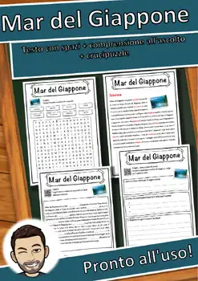
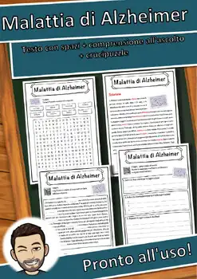
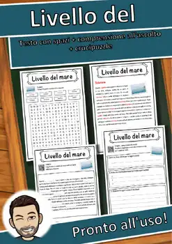

New resources
My newest resources appear here first. The list updates automatically.
48 resources
Natura
Natura – Italian Reading Comprehension Worksheet (Scheda): Cloze & Listening
Natale
Natale – Italian Reading Comprehension Worksheet (Scheda): Cloze & Listening
Namibia
Namibia – Italian Reading Comprehension Worksheet (Scheda): Cloze & Listening
Musa
Musa – Italian Reading Comprehension Worksheet (Scheda): Cloze & Listening
Mostro di Loch Ness – Italian Reading Comprehension Worksheet (Scheda didattica)
Mostro di Loch Ness – Italian Reading Comprehension Worksheet (Scheda didattica)
Mostra
Mostra – Italian Reading Comprehension Worksheet (Scheda): Cloze & Listening
Morte
Morte – Italian Reading Comprehension Worksheet (Scheda): Cloze & Listening
Monti Metalliferi – Italian Reading Comprehension Worksheet (Scheda didattica)
Monti Metalliferi – Italian Reading Comprehension Worksheet (Scheda didattica)
Monte Bianco – Italian Reading Comprehension Worksheet (Scheda didattica)
Monte Bianco – Italian Reading Comprehension Worksheet (Scheda didattica)
Molibdeno
Molibdeno – Italian Reading Comprehension Worksheet (Scheda): Cloze & Listening
Moldavia
Moldavia – Italian Reading Comprehension Worksheet (Scheda): Cloze & Listening
Ministro
Ministro – Italian Reading Comprehension Worksheet (Scheda): Cloze & Listening
Migrazione umana – Italian Reading Comprehension Worksheet (Scheda didattica)
Migrazione umana – Italian Reading Comprehension Worksheet (Scheda didattica)
Michail Gorbačëv – Italian Reading Comprehension Worksheet (Scheda didattica)
Michail Gorbačëv – Italian Reading Comprehension Worksheet (Scheda didattica)
Metabolismo – Italian Reading Comprehension Worksheet (Scheda didattica)
Metabolismo – Italian Reading Comprehension Worksheet (Scheda didattica)
Mestruazione – Italian Reading Comprehension Worksheet (Scheda didattica)
Mestruazione – Italian Reading Comprehension Worksheet (Scheda didattica)
Messia
Messia – Italian Reading Comprehension Worksheet (Scheda): Cloze & Listening
Louis Pasteur – Italian Reading Comprehension Worksheet (Scheda didattica)
Louis Pasteur – Italian Reading Comprehension Worksheet (Scheda didattica)
Linneo
Linneo – Italian Reading Comprehension Worksheet (Scheda): Cloze & Listening
Messaggio in bottiglia – Italian Reading Comprehension Worksheet

Mese – Italian Reading Comprehension Worksheet (Scheda): Cloze & Listening

Mercurio – Italian Reading Comprehension Worksheet (Scheda): Cloze & Listening

Mercante – Italian Reading Comprehension Worksheet (Scheda): Cloze & Listening
Meraviglie del mondo – Italian Reading Comprehension Worksheet

Meitnerio – Italian Reading Comprehension Worksheet (Scheda): Cloze & Listening

Media – Italian Reading Comprehension Worksheet (Scheda): Cloze & Listening
Materie prime – Italian Reading Comprehension Worksheet (Scheda didattica)
Martino di Tours – Italian Reading Comprehension Worksheet (Scheda didattica)
Marie Curie – Italian Reading Comprehension Worksheet (Scheda didattica)

Marea – Italian Reading Comprehension Worksheet (Scheda): Cloze & Listening

Mare – Italian Reading Comprehension Worksheet (Scheda): Cloze & Listening
Marciapiede – Italian Reading Comprehension Worksheet (Scheda didattica)

Mar del Giappone – Italian Reading Comprehension Worksheet (Scheda didattica)

Mar Nero – Italian Reading Comprehension Worksheet (Scheda): Cloze & Listening

Mar Morto – Italian Reading Comprehension Worksheet (Scheda): Cloze & Listening

Natale e inverno – Comprensione del testo GRATIS | Italian Sampler

Mar Caspio – Italian Reading Comprehension Worksheet (Scheda): Cloze & Listening

Malattia di Alzheimer – Italian Reading Comprehension Worksheet

Magia – Italian Reading Comprehension Worksheet (Scheda): Cloze & Listening

Madagascar – Italian Reading Comprehension Worksheet (Scheda): Cloze & Listening

Lutezio – Italian Reading Comprehension Worksheet (Scheda): Cloze & Listening
Lumbricidae – Italian Reading Comprehension Worksheet (Scheda didattica)

Noël et l'hiver – Compréhension écrite GRATUITE | French Reading Sampler

Lotteria – Italian Reading Comprehension Worksheet (Scheda): Cloze & Listening

Lot – Italian Reading Comprehension Worksheet (Scheda): Cloze & Listening

Arte antiguo y altomedieval

Natale e inverno – Italian Reading BUNDLE | Christmas & Winter Schede

Livello del mare – Italian Reading Comprehension Worksheet (Scheda didattica)
No resources found – try a different search term or filter.